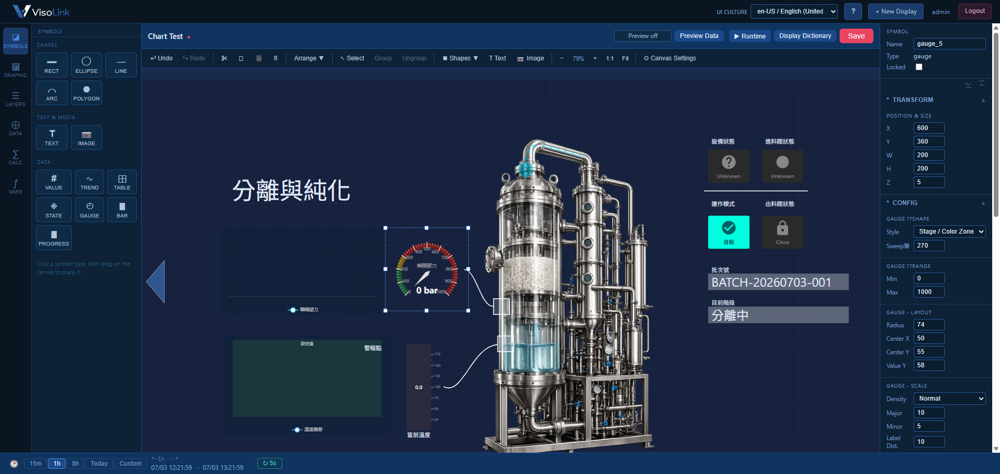
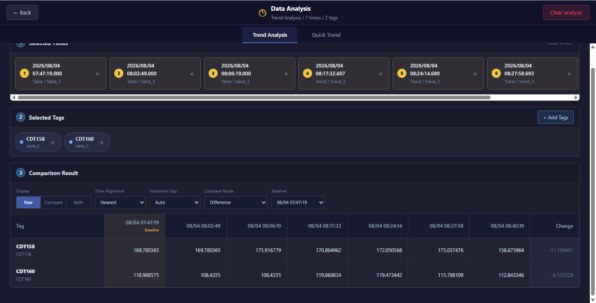
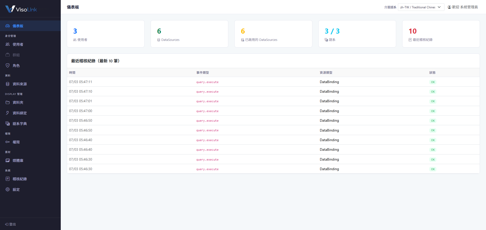
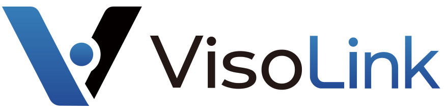

🧩
資料分散
不同系統、格式與查詢方式，使跨來源資訊難以在同一張監控畫面整合。
當資料散落在 Historian、資料庫與各種應用系統，真正昂貴的往往不是取得資料，而是每一次畫面需求都要重新溝通、開發與部署。
不同系統、格式與查詢方式，使跨來源資訊難以在同一張監控畫面整合。
現場需求必須經過工單、開發與上線窗口，小幅調整也可能耗費數週。
畫面需要跨部門共享，但底層製程資料仍必須依職責與範圍隔離。
串接 Historian、資料庫與工業資料服務。
將大量資料分類成可搜尋的資產。
建立跨來源變數與衍生指標。
用自由畫布組合監控圖面。
持續監看並比較關鍵時刻與趨勢。
分開管理圖面與資料存取。
VisoLink 將自由畫布、工業元件與資料綁定整合成可重複使用的標準化工具。

拖曳、縮放、旋轉、對齊與圖層排序，讓現場工程師能依製程語意自行建立畫面。
不受固定 Dashboard Grid 限制，建立符合現場設備配置的監控畫面。
DataBinding 將資料來源與視覺元件解耦，便於重用與維護。
在不同資料來源之間進行運算，將原始數值轉換為可用指標。
透過資料夾、縮圖、版本快照與圖形庫管理可持續使用的內容。
將選定時間範圍彙整為比例與組成，快速比較產量、能耗或異常分布。
把能源、物料與製程流向轉換為可閱讀的關係圖，呈現數值之間的流動脈絡。
將既有 Web 系統與報表納入統一監控畫面，減少操作人員在多個系統之間切換。
從建立連線、選擇資料、定義 View、映射欄位到預覽結果，都能在同一個管理流程完成。

連接資料只是第一步。VisoLink 讓工程師依設備、產線與製程語意分類 DataBinding，快速搜尋需要的資料，並直接拖曳到畫布建立監控元件。
將不同 DataBinding 的數值定義為可重用變數，在 Runtime 持續進行公式運算，再把結果直接套用到監控元件。
把原始數值轉換成真正可供判斷、追蹤與改善的營運指標。
VisoLink 可重用已取得的歷史查詢結果，減少相同資料被反覆查詢；當監控規模成長時，快取服務也能分流至多台設備，支援更多使用者與 Display 同時運行。
相同資料與時間範圍可重用既有結果，避免每張 Display 都重新發出相同查詢。
減少 Historian、資料庫與工業資料服務的重複存取，保護既有系統資源。
快取工作可分配至多台設備，避免大量查詢集中在單一節點。
使用者、Display 與資料量增加時，可逐步擴充快取服務能力。
Data Analysis 將原有的 Popup Trend 與時間標記分析整合在同一個 Runtime 工作區。使用者不必離開監控情境，即可從「線」觀察趨勢，也能從「點」比較特定時刻的製程數值。
原有 Popup Trend 已納入 Data Analysis。使用者可從 Runtime 累積加入多個資料標籤，在同一時間軸疊合趨勢線，觀察資料的方向、波動與關聯。
在 Trend 或 Table 中標記多個時間點，再選擇需要比較的資料標籤，把圖上的觀察轉換為可量化的數值分析。


全域時間 Filter 與互動式時間窗同步控制 Runtime 的監看與分析範圍。
分析點不只是游標，而是可以保留、拖曳、排序與比較的分析物件。
依選定時段進行加總、平均、最大值、最小值或筆數等彙整，再以不同圖表呈現。
全畫面與固定畫布模式適應中控大屏及不同尺寸顯示設備，長時間序列仍能平順操作。
VisoLink 將「能否開啟監控畫面」與「能否取得畫面中的工業資料」分開授權，避免共享 Display 時連帶開放敏感資料。
類型感知設定、連線測試、View 與 Schema 瀏覽，以及憑證加密保護。
集中管理帳號、角色與資源存取，支援跨部門的分工與共享情境。
透過 Admin 線上維護字典、語言與翻譯內容，不需重新建置應用程式。
記錄重要管理操作、操作者、時間與變更內容，支援治理與問題追查。
保留 Display 近期版本快照，可查看或復原，降低誤改造成的營運風險。
以登入驗證、敏感資訊加密與伺服器端撤銷機制保護系統存取。
集中掌握核心服務、資料庫與快取設備的運作狀況，讓維運人員快速定位異常。
集中保存重要設定與系統資料，在升級、移轉或異常情境下加速恢復。
清楚掌握授權容量、目前使用狀況與歷史紀錄，支援企業規模規劃。


VisoLink 透過 Docker Compose 組合使用者前台、管理後台、應用服務、資料庫與快取服務。各服務責任清楚，便於依企業規模進行維運與擴充。
Studio、Runtime 與管理後台使用各自入口，降低操作角色之間的干擾。
由 Server 統一處理資料查詢、安全驗證與核心業務邏輯。
畫面資產、設定、權限與稽核資料集中保存於 PostgreSQL。
重用歷史查詢結果，並可透過多台快取設備分散成長中的查詢負荷。

整合資料連接、資產整理、衍生計算、自由設計、即時分析、快取分流與權限治理，形成可持續成長的工業視覺化平台。